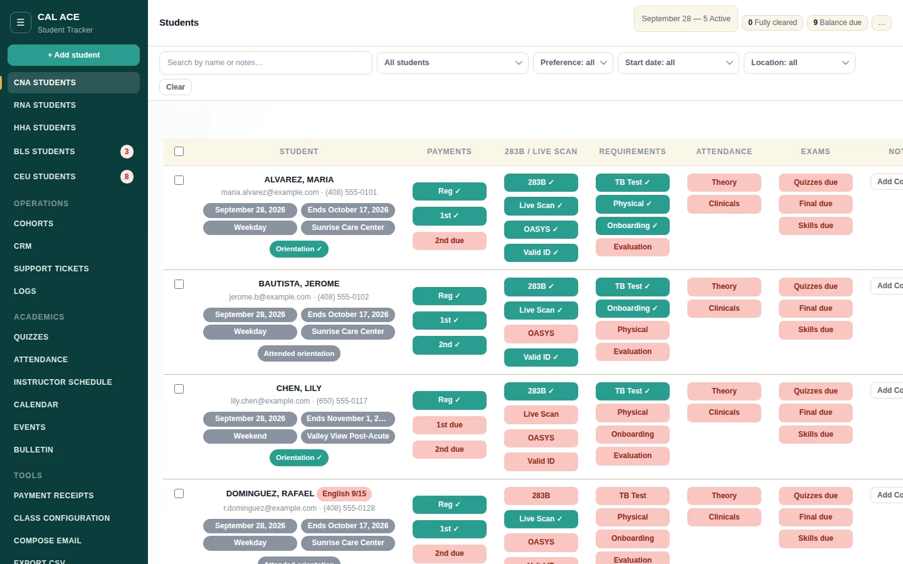
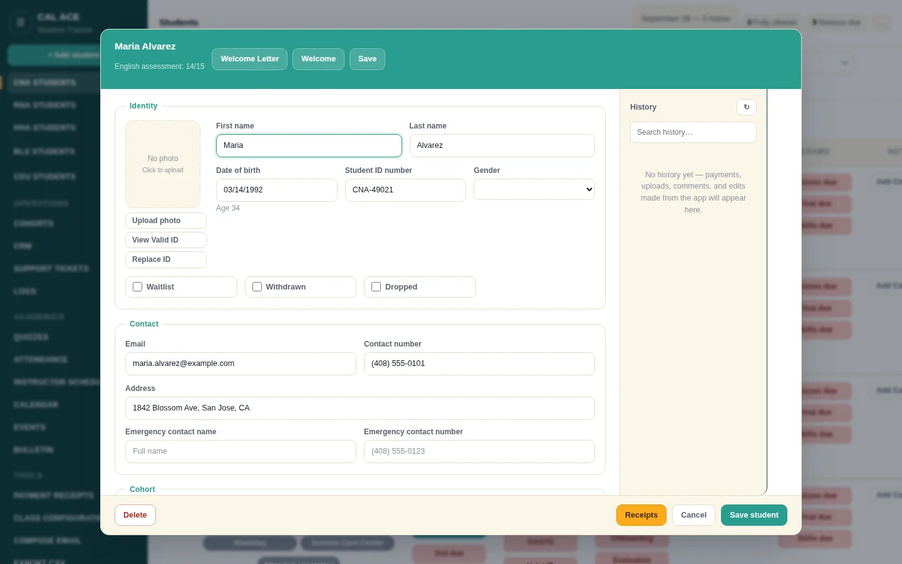
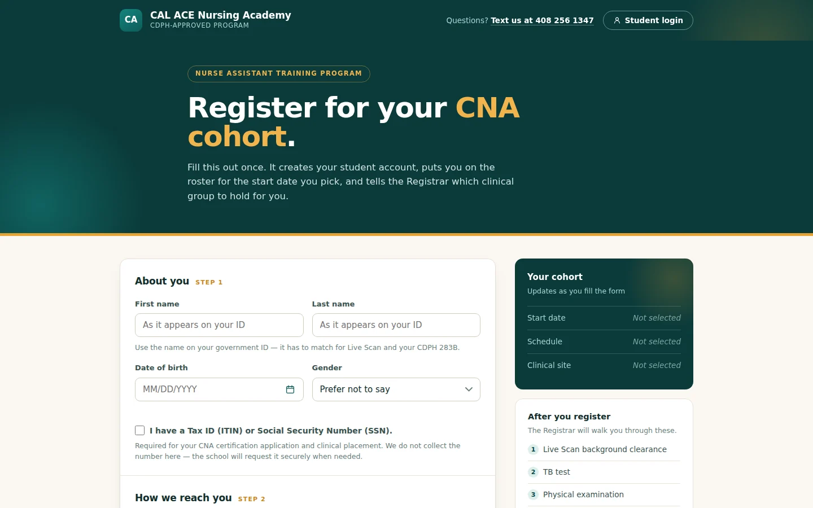

CAL ACE Student Management System
A custom student CRM, enrollment website and payment pipeline for a CDPH-approved nurse assistant training program. A student goes from first click to clinical placement without staff re-entering a single field.
01The problem
Running a multi-campus nursing school on spreadsheets and paper meant triple data entry: a student registered on one form, the office re-typed them into the roster, and payments lived somewhere else entirely. Requirements like Live Scan, TB tests and CDPH 283B forms were tracked by memory and follow-up calls.
02The staff tracker
One roster view per program (CNA, RNA, HHA, BLS and CEU), tracking 50+ data points per student: payments, CDPH 283B, Live Scan, TB, physical, onboarding, exams, attendance and evaluations.

- Color-coded chips show each student’s outstanding items at a glance; filters surface anyone missing a requirement across the whole school.
- One-click personalized reminder emails that list only what that student is missing, with upload links.
- Welcome letters generated per cohort from templates, bulk actions, payment receipts, and a full activity log of every change.
- A Class Configuration tab where office staff open or close cohorts, set seat caps and manage clinical sites. The public website updates instantly, no developer needed.

03The enrollment website
A branded registration page with a live seat counter per cohort, schedule and clinical site. When a cohort fills, the site moves students to the waitlist automatically.

- A built-in English reading assessment every registrant completes before payment. Low scores are flagged for staff, not used to reject.
- Stripe payment integration with automatic receipts.
- A student dashboard where enrollees log in to upload documents (valid photo ID, TB test, physical), check requirements and see their balance.
04How the two connect
- New registrations flow straight from the website into the tracker.
- Seat counts on the website are computed live from the actual roster.
- Requirement rules are cohort-aware: the valid-ID requirement, for example, applies only to cohorts starting on or after its effective date.